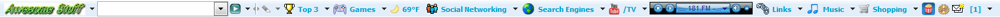

Origins
My best friend in middle school had already made a few sites on webs.com, including Radical Dragon and Harry Hackers, and he showed me how to make one. Webs.com was the craze back then, and millions of sites lived there. I liked talking about tech, so I started Awesome Stuff at lawesomel.webs.com as a place to rank the things I liked.
Contents
Over time we added whatever we thought was fun. We posted obscure links, like live traffic cams and CCTV sites that streamed cameras from around the world. Widgets were extremely popular, so we added all the widgets we could find, and since web games back then had an “add this game to your site” button, I think we added some of those too. I shared photos I'd taken with my camera, the games I made in GameMaker, and script-kiddie hacking tricks for pulling pranks on people, along with other fun scripts. Toolbars were big at the time, so I made a Conduit toolbar for Awesome Stuff and advertised the download on the site.

Two domains
Awesome Stuff was one site on two domains. The main site was at lawesomel.webs.com, and the hacking scripts and games were in a section at awesomestuffr.webstarts.com. Webstarts had more features than webs.com, like password-protected pages. I tried to make that section look the same as the main site, but I didn't do very well. It's somehow still online.